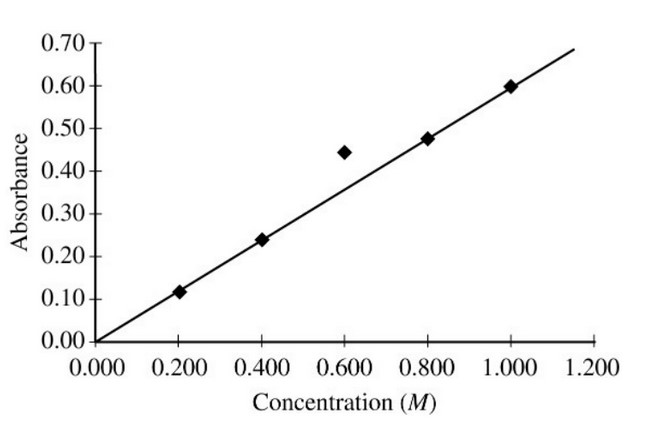

A student prepared five solutions of \(\ce{CuSO4}\) with different concentrations, and then filled five cuvettes, each
containing one of the solutions. The cuvettes were placed in a spectrophotometer set to the appropriate wavelength for
maximum absorbance. The absorbance of each solution was measured and recorded. The student plotted absorbance versus
concentration, as shown in the figure above. Which of the following is the most likely explanation for the variance of
the data point for the 0.600 \(M \ce{CuSO4}\) solution?
Lets check each answer choice:
If extra water droplets were inside, then the concentration should be lower than expected by the line of best fit. It should therefore correspond to a lower absorbance, not a higher one.
If the cuvette was more filled, the concentration does not change, just the volume. The concentration is the only thing which affects absorbance.
If the wavelength setting was not at the appropriate wavelength for maximum absorbance, than we should expect a lower absorbance.
If the cuvette was not wiped clean, material on the surface could affect transmittance of the light. This effect is similar to having a more concentrated solution. We therefore see a higher absorbance than what is predicted.